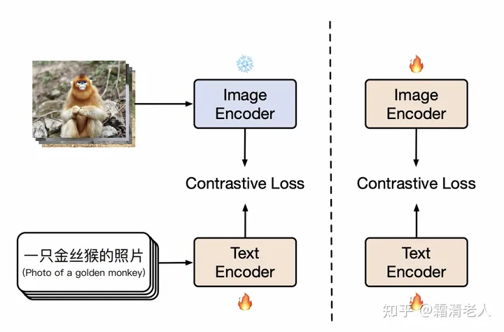

CLIP Training [9] #
# image_encoder - ResNet or Vision Transformer
# text_encoder - CBOW or Text Transformer
# I[n, h, w, c] - minibatch of aligned images
# T[n, l] - minibatch of aligned texts
# W_i[d_i, d_e] - learned proj of image to embed
# W_t[d_t, d_e] - learned proj of text to embed
# t - learned temperature parameter
# extract feature representations of each modality
# -------------------------------------------------
# 1、图像/文字数据过image/text encoder，提取单模态特征
# 每张图片对应一个基本特征I_i
# 每张文字对应一个基本特征T_i
# -------------------------------------------------
I_f = image_encoder(I) #[n, d_i]
T_f = text_encoder(T) #[n, d_t]
# -------------------------------------------------
# 2. 图像/文字的基本特征过多模态Embedding，提取多模态特征
# 同时对这两个多模态特征做Layer Norm
# -------------------------------------------------
I_e = l2_normalize(np.dot(I_f, W_i), axis=1) # [n, d_i] * [d_i, d_e] = [n, d_e]
T_e = l2_normalize(np.dot(T_f, W_t), axis=1) # [n, d_t] * [d_t, d_e] = [n, d_e]
# -------------------------------------------------
# 3、计算图片-文字向量的余弦相似度
# -------------------------------------------------
logits = np.dot(I_e, T_e.T) * np.exp(t) # [n, n]
# -------------------------------------------------
# 4、计算Loss
# -------------------------------------------------
labels = np.arange(n)
loss_i = cross_entropy_loss(logits, labels, axis=0)
loss_t = cross_entropy_loss(logits, labels, axis=1)
loss = (loss_i + loss_t)/2
- CLIP分为按行计算Loss和按列计算Loss
- 按行计算Loss，在每一行范围内做softmax，然后计算cross_entropy（蓝色格子部分是真值）。这样计算Loss的意义是：对于每一张图片，我们都希望找到和它最相似的文字。
- 按列计算Loss，在每一列的范围内做softmax，然后计算cross_entropy（蓝色格子部分是真值）。这样计算Loss的意义是：对于每一段文字，我们都希望找到和它最相似的图片。
- 最后将这两个Loss相加取平均，代表我们在模型优化过程中考虑了“图片->文字”和“文字->图片”的双向关系。
Simple Demo[10] #
【基于clip on resnet, 数据集为mnist中的<数字文本，数字图片>对】
open_clip[11] #
- Training CLIP
python -m training.main \
--save-frequency 1 \
--zeroshot-frequency 1 \
--report-to tensorboard \
--train-data="/path/to/train_data.csv" \ # 训练数据
--val-data="/path/to/validation_data.csv" \ # 验证数据
--csv-img-key filepath \
--csv-caption-key title \
--imagenet-val=/path/to/imagenet/root/val/ \
--warmup 10000 \ #
--batch-size=128 \ #
--lr=1e-3 \ #
--wd=0.1 \
--epochs=30 \ #
--workers=8 \
--model RN50 # 模型
Chinese-CLIP #
方法[20] #

我们的核心方法在于把训练分为两阶段（如上图所示），第一阶段和LiT是一致的，冻结图像塔，让文本塔表示接近图像塔表示。当训练继续但下游精度不能再产生显著提升，即下游零样本检索的精度，我们就把训练切换到第二阶段，即解除图像塔的参数冻结，继续用contrastive tuning预训练，同样直到下游精度没有显著提升。后者的意义在于让图像塔能拟合中文世界的图像数据的分布，学习中文世界的知识。更多实验参数欢迎查看论文的附录部分。
demo[21] #
代码都看过
# 图片库特征抽取代码
python3 extract_embeddings.py
# 图片特征在faiss向量数据库建立索引
python3 build_index.py
# 可视化应用界面
streamlit run app.py
参考 #
实战 #
Chinese-CLIP #
-
AIGC之图片生成——基于clip内容检索 clip_retrieval git
demos Repo readme有解释
1xx. Chinese-CLIP Repo git
1xx. 中文CLIP文到图搜索应用 demo
xxx #
1xx. langchain 中有CLIP的实现